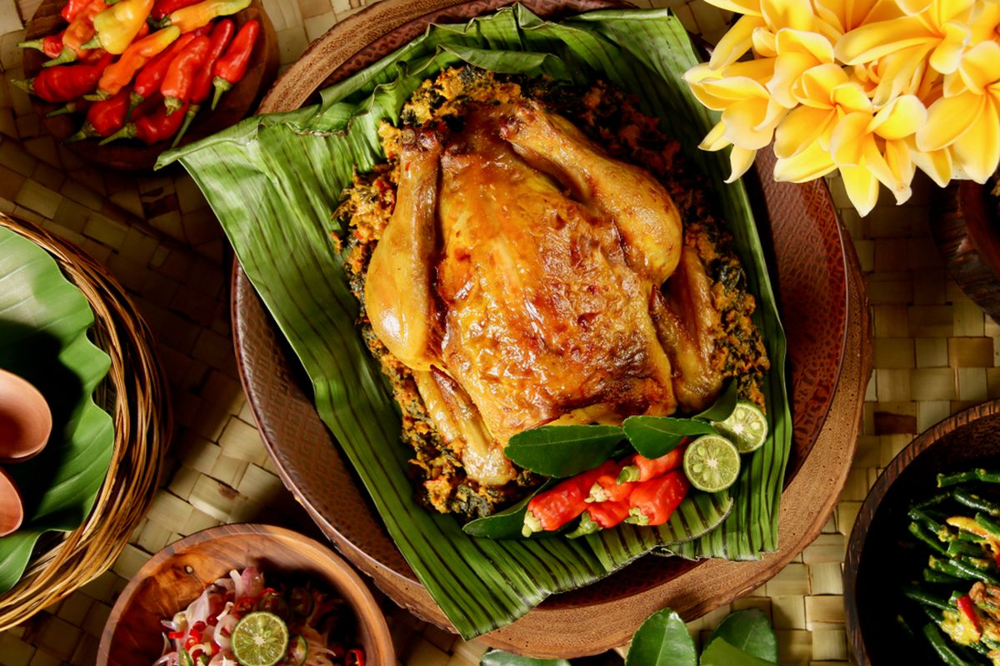

Ayam Betutu
Ayam berbumbu base genep, dimasak perlahan sampai meresap. Dari Gilimanuk, Jembrana, sering hadir di upacara ketika keluarga berkumpul.
Bumbu diulek halus, dibungkus daun pisang, lalu dimasak berjam-jam.
CERITA 1 / 9
Gilimanuk
Jembrana
Bali barat
Base genep
Asal
Gilimanuk, Kabupaten Jembrana, Bali barat.
Bumbu
Base genep: kunyit, lengkuas, bawang, cabai, dan rempah lain.
Makna
Kesabaran dan kebersamaan, dimasak lama dan disantap bersama.

Ayam Betutu · Gilimanuk